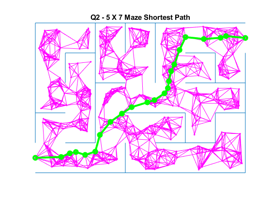
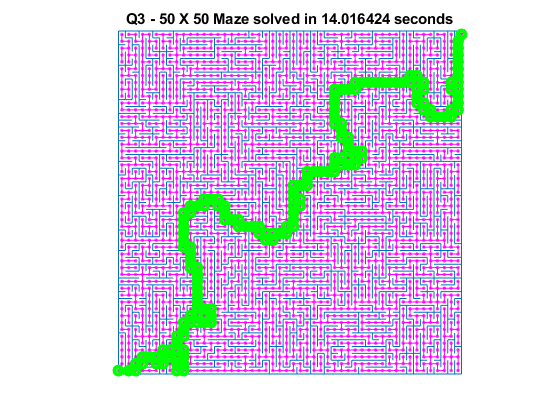

% ====== % ROB521_assignment1.m % ====== % % This assignment will introduce you to the idea of motion planning for % holonomic robots that can move in any direction and change direction of % motion instantaneously. Although unrealistic, it can work quite well for % complex large scale planning. You will generate mazes to plan through % and employ the PRM algorithm presented in lecture as well as any % variations you can invent in the later sections. % % There are three questions to complete (5 marks each): % % Question 1: implement the PRM algorithm to construct a graph % connecting start to finish nodes. % Question 2: find the shortest path over the graph by implementing the % Dijkstra's or A* algorithm. % Question 3: identify sampling, connection or collision checking % strategies that can reduce runtime for mazes. % % Fill in the required sections of this script with your code, run it to % generate the requested plots, then paste the plots into a short report % that includes a few comments about what you've observed. Append your % version of this script to the report. Hand in the report as a PDF file. % % requires: basic Matlab, % % S L Waslander, January 2022 % clear; close all; clc; % set random seed for repeatability if desired % rng('default') % rng(7); % ========================== % Maze Generation % ========================== % % The maze function returns a map object with all of the edges in the maze. % Each row of the map structure draws a single line of the maze. The % function returns the lines with coordinates [x1 y1 x2 y2]. % Bottom left corner of maze is [0.5 0.5], % Top right corner is [col+0.5 row+0.5] % row = 5; % Maze rows col = 7; % Maze columns map = maze(row,col); % Creates the maze start = [0.5, 1.0]; % Start at the bottom left finish = [col+0.5, row]; % Finish at the top right h = figure(1);clf; hold on; plot(start(1), start(2),'go') plot(finish(1), finish(2),'rx') show_maze(map,row,col,h); % Draws the maze drawnow; % ====================================================== % Question 1: construct a PRM connecting start and finish % ====================================================== % % Using 500 samples, construct a PRM graph whose milestones stay at least % 0.1 units away from all walls, using the MinDist2Edges function provided for % collision detection. Use a nearest neighbour connection strategy and the % CheckCollision function provided for collision checking, and find an % appropriate number of connections to ensure a connection from start to % finish with high probability. % variables to store PRM components nS = 500; % number of samples to try for milestone creation milestones = [start; finish]; % each row is a point [x y] in feasible space edges = []; % each row is should be an edge of the form [x1 y1 x2 y2] disp("Time to create PRM graph") tic; % ------insert your PRM generation code here------- % qiaoxin2 solution % generate 500 uniform samples, check for collision and then add to % milestones % The map contains all lines, each row represents a line dx = rand(1,nS); dy = rand(1,nS); % bottom left and top right % bl = [0.5,0.5]; % tr = [7.5,5.5]; % 1 and 3 are xs, and 2 and 4 are ys min_columns = min(map); max_columns = max(map); xmin = min(min_columns(1),min_columns(3)); xmax = max(max_columns(1),max_columns(3)); ymin = min(min_columns(2),min_columns(4)); ymax = max(max_columns(2),max_columns(4)); % display([xmin,ymin,xmax,ymax]); x_samples = xmin + dx*col; y_samples = ymin + dy*row; % size(x_samples) % here is our 500 points sample_pts = [x_samples;y_samples]'; % size(sample_pts) % check for collisions, add to milestones min_distances = MinDist2Edges(sample_pts, map)'; % size(min_distances) for i = 1:nS sample_pt = sample_pts(i,:); if min_distances(i) > 0.1 milestones = [milestones; sample_pt]; end end % milestones = unique(milestones,'rows'); n_milestones = size(milestones,1); dist_mile = zeros(n_milestones); adj_mat = zeros(n_milestones); size(adj_mat); for i = 1:n_milestones milestone = milestones(i,:); idx = knnsearch(milestones,milestone,'K',10); for k = idx neighbour = milestones(k,:); % check collision [inCollision, e] = CheckCollision(milestone,neighbour,map); if ~inCollision if(size(edges) ~= 0) if(ismember([milestone, neighbour],edges,'rows')~=1 && (ismember([neighbour,milestone],edges,'rows')~=1)) edges = [edges; milestone, neighbour]; % update the adjacancy matrix adj_mat(i, k) = 1; adj_mat(k, i) = 1; end else display("First time edge is added") edges = [edges; milestone, neighbour]; adj_mat(i, k) = 1; adj_mat(k, i) = 1; end end end % build the adjacancy matrix for j = i:n_milestones j_milestone = milestones(j, :); ij_dist = norm(milestone - j_milestone); dist_mile(i, j) = ij_dist; dist_mile(j, i) = ij_dist; end end % build an diatance matrix to help with dijkstra dist_mile = dist_mile .* adj_mat; % ------end of your PRM generation code ------- toc; figure(1); plot(milestones(:,1),milestones(:,2),'m.'); if (~isempty(edges)) line(edges(:,1:2:3)', edges(:,2:2:4)','Color','magenta') % line uses [x1 x2 y1 y2] end str = sprintf('Q1 - %d X %d Maze PRM', row, col); title(str); drawnow; print -dpng assignment1_q1.png % ================================================================= % Question 2: Find the shortest path over the PRM graph % ================================================================= % % Using an optimal graph search method (Dijkstra's or A*) , find the % shortest path across the graph generated. Please code your own % implementation instead of using any built in functions. disp('Time to find shortest path'); tic; % Variable to store shortest path spath = []; % shortest path, stored as a milestone row index sequence % qiaoxin2 solution for Dijkstra % Dijkstra's algorithm % initilize the distance matrix dist = Inf(n_milestones,1); previous = -1 * ones(n_milestones, 1); dist(1) = 0; % length of the queue q = 1:n_milestones; % initialize done = false done = false; while length(q) > 0 % find min node value_min = Inf; index_min = -1; min_q_idx = -1; for j = 1:length(q) node_j = q(j); if dist(node_j) < value_min value_min = dist(node_j); min_q_idx = j; index_min = node_j; end end if min_q_idx == -1 break end q = [q(1:min_q_idx-1) q(min_q_idx+1:end)]; % update previous for j = 1:n_milestones if dist_mile(index_min, j) > 0 if any(q == j) if dist(index_min) + dist_mile(index_min, j) < dist(j) dist(j) = dist(index_min) + dist_mile(index_min, j); previous(j) = index_min; end end end end if all(milestones(index_min, :) == finish) done = true; break end end % store path if done path_r = [2]; i = 2; while true if all(milestones(i, :) == start) break end i = previous(i); path_r = [path_r i]; end spath = flip(path_r); end % ------end of shortest path finding algorithm------- toc; % plot the shortest path figure(1); for i=1:length(spath)-1 plot(milestones(spath(i:i+1),1),milestones(spath(i:i+1),2), 'go-', 'LineWidth',3); end str = sprintf('Q2 - %d X %d Maze Shortest Path', row, col); title(str); drawnow; print -dpng assingment1_q2.png
Time to create PRM graph
"First time edge is added"
Elapsed time is 0.719877 seconds.
Time to find shortest path
Elapsed time is 0.011224 seconds.
 ================================================================ Question 3: find a faster way ================================================================
Modify your milestone generation, edge connection, collision detection and/or shortest path methods to reduce runtime. What is the largest maze for which you can find a shortest path from start to goal in under 20 seconds on your computer? (Anything larger than 40x40 will suffice for full marks)
clear; close all; clc; row = 50; col = 50; map = maze(row,col); start = [0.5, 1.0]; finish = [col+0.5, row]; milestones = [start; finish]; % each row is a point [x y] in feasible space edges = []; % each row is should be an edge of the form [x1 y1 x2 y2] h = figure(2);clf; hold on; plot(start(1), start(2),'go') plot(finish(1), finish(2),'rx') show_maze(map,row,col,h); % Draws the maze drawnow; fprintf("Attempting large %d X %d maze... \n", row, col); tic; % ------insert your optimized algorithm here------ % qiaoxin2 solution % we want to reduce the sampling points and thus check less collsions % lets sample points in between two walls x_wall = sort([map(:,1) map(:,3)]); x_wall = unique(x_wall); y_wall = sort([map(:,2) map(:,4)]); y_wall = unique(y_wall); sample_x = (x_wall(1:end-1) + x_wall(2:end))/2; sample_y = (y_wall(1:end-1) + y_wall(2:end))/2; for i = 1:length(sample_x) for j = 1:length(sample_y) milestones = [milestones; [sample_x(i) sample_y(j)]]; end end % reuse the code from part(1) n_milestones = size(milestones,1); dist_mile = zeros(n_milestones); adj_mat = zeros(n_milestones); size(adj_mat); for i = 1:n_milestones milestone = milestones(i,:); idx = knnsearch(milestones,milestone,'K',5); for k = idx neighbour = milestones(k,:); % check collision [inCollision, e] = CheckCollision(milestone,neighbour,map); if ~inCollision if(size(edges) ~= 0) if(ismember([milestone, neighbour],edges,'rows')~=1 && (ismember([neighbour,milestone],edges,'rows')~=1)) edges = [edges; milestone, neighbour]; % update the adjacancy matrix adj_mat(i, k) = 1; adj_mat(k, i) = 1; end else display("First time edge is added") edges = [edges; milestone, neighbour]; adj_mat(i, k) = 1; adj_mat(k, i) = 1; end end end % build the adjacancy matrix for j = i:n_milestones j_milestone = milestones(j, :); ij_dist = norm(milestone - j_milestone); dist_mile(i, j) = ij_dist; dist_mile(j, i) = ij_dist; end end % build an diatance matrix to help with dijkstra dist_mile = dist_mile .* adj_mat; spath = []; % Dijkstra's algorithm % initilize the distance matrix dist = Inf(n_milestones,1); previous = -1 * ones(n_milestones, 1); dist(1) = 0; % length of the queue q = 1:n_milestones; % initialize done = false done = false; while length(q) > 0 % find min node value_min = Inf; index_min = -1; min_q_idx = -1; for j = 1:length(q) node_j = q(j); if dist(node_j) < value_min value_min = dist(node_j); min_q_idx = j; index_min = node_j; end end if min_q_idx == -1 break end q = [q(1:min_q_idx-1) q(min_q_idx+1:end)]; % update previous for j = 1:n_milestones if dist_mile(index_min, j) > 0 if any(q == j) if dist(index_min) + dist_mile(index_min, j) < dist(j) dist(j) = dist(index_min) + dist_mile(index_min, j); previous(j) = index_min; end end end end if all(milestones(index_min, :) == finish) done = true; break end end % store path if done path_r = [2]; i = 2; while true if all(milestones(i, :) == start) break end i = previous(i); path_r = [path_r i]; end spath = flip(path_r); end % ------end of your optimized algorithm------- dt = toc; figure(2); hold on; plot(milestones(:,1),milestones(:,2),'m.'); if (~isempty(edges)) line(edges(:,1:2:3)', edges(:,2:2:4)','Color','magenta') end if (~isempty(spath)) for i=1:length(spath)-1 plot(milestones(spath(i:i+1),1),milestones(spath(i:i+1),2), 'go-', 'LineWidth',3); end end str = sprintf('Q3 - %d X %d Maze solved in %f seconds', row, col, dt); title(str); print -dpng assignment1_q3.png
Attempting large 50 X 50 maze...
"First time edge is added"
